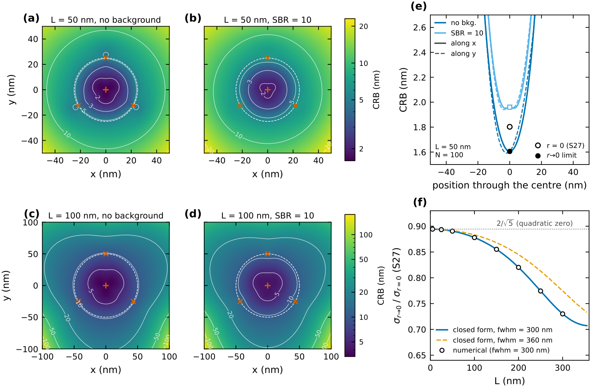
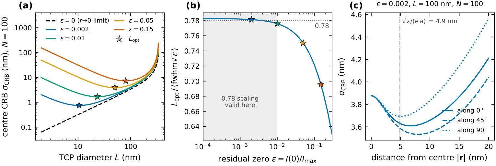
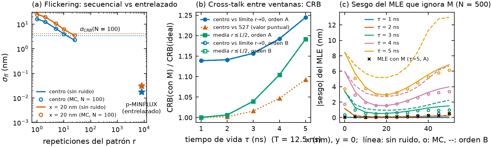
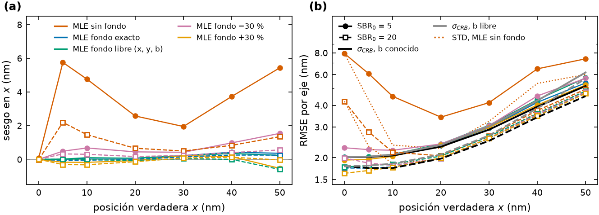

Localización de emisores individuales con haces dona: síntesis del proyecto y aplicación a p-MINFLUX
Resumen. Construimos un estudio de simulación reproducible de la localización de moléculas fluorescentes individuales con haces de excitación tipo dona (MINFLUX y variantes). Incluye un paquete Python propio, scripts por figura, 254 tests y un registro de números con procedencia. Cada resultado fue reproducido por un verificador independiente. En este informe resumimos los resultados principales y los contrastamos con el simulador SimuFLUX (Marin & Ries, 2026). Después agregamos dos estudios nuevos para el caso que nos interesa, p-MINFLUX no iterativo: 4 exposiciones entrelazadas de igual duración con un láser pulsado de 20 MHz y patrón de tamaño fijo. Encontramos que el entrelazado elimina prácticamente el error por parpadeo del fluoróforo, que en MINFLUX secuencial llega a 16 nm. El precio es un cruce entre ventanas temporales por el tiempo de vida, que sesga el estimador si no se modela. Además, no modelar el fondo sesga la posición unos 5 nm con SBR = 5.
1. Qué se hizo
Modelo. En MINFLUX, un emisor en r se expone a K haces con un mínimo de intensidad, y los fotones detectados en cada exposición siguen una multinomial con probabilidades pi = Ii(r)/ΣIj(r) (Balzarotti et al. 2017). Usamos el patrón triangular (TCP): 3 donas en un círculo de diámetro L más una en el centro. La dona es Laguerre–Gauss, I(r) = 4e ln2 (r²/fwhm²) exp(−4 ln2 r²/fwhm²), con fwhm = 300 nm. Comparamos esa dona con una dona vectorial de alta apertura (Richards–Wolf, NA = 1.4). La precisión se mide con el límite de Cramér–Rao (CRB), σCRB = √((Σxx+Σyy)/2), y con Monte Carlo de estimadores (MLE, LMS, mLMS). El fondo entra como una SBR fija o como un fondo igual en todas las exposiciones.
Cómo se trabajó. Seguimos la metodología agent-team: rondas acotadas con un equipo de agentes
(planificador, workers y un verificador que no participa del trabajo). Un número entra al manuscrito solo si el
verificador lo reprodujo por un camino propio. La definición de "terminado" es un test de aceptación escrito antes
de empezar y protegido por hash. Todo queda registrado en equipo/.
| Componente | Contenido |
|---|---|
src/donutloc/ | haces LG y vectorial, patrones, fotones con fondo, Fisher/CRB, formas cerradas, MLE/LMS/mLMS, Monte Carlo, cámara; nuevo: pminflux.py (temporización) y background.py (fondo libre) |
scripts/ | un script por figura (fig_1…fig_10), compute_paper_numbers.py, check_provenance.py, reproduce.py |
tests/ | 254 tests unitarios (pasan; 1 omitido por no haber LaTeX) + test de aceptación 8/8 |
data/, paper/ | paper_numbers.json (217 números), manuscrito con 179 etiquetas de procedencia |
docs/, equipo/ | notas de literatura con ecuaciones y páginas (A–D) y el registro de cada ronda (planes, informes, verificaciones) |
2. Resultados principales del repositorio (verificados)
- CRB en el centro del TCP. Sin fondo, el CRB es discontinuo en el centro. El límite r→0 vale 1.61 nm, menor que el valor puntual de Balzarotti (Eq. S27), 1.80 nm (L = 50 nm, N = 100). La razón es 0.890, cercana a 2/√5 = 0.894, que es el valor exacto para un cero cuadrático. Con SBR = 10 la discontinuidad desaparece y el CRB vale 1.96 nm (Fig. 1). [src:crb_center]
- Escalamiento. Para L ≪ fwhm, σCRB ∝ L1.00 N−0.50. Con L = 50 nm alcanzan 13 fotones (15.4 con SBR = 10) para 5 nm de precisión; una cámara ideal con σPSF = 100 nm necesita 400. Son unos 26 veces menos fotones. [src:scaling]
- Modelo del haz. Si la LG se iguala por curvatura en el cero, reproduce el CRB de la dona vectorial con polarización circular correcta (diferencia < 0.4 %). Con la handedness opuesta, o con polarización lineal, el cero se llena hasta el 85 % o el 37 % del pico, y el CRB con L = 50 nm pasa de 1.60 nm a 148 nm o 61 nm. [src:vectorial]
- Estimadores. Con fondo (SBR = 10), el MLE alcanza el CRB en el centro: eficiencia 0.991. En cambio LMS y mLMS se sesgan lejos del centro: a 25 nm, el sesgo es −14.4 nm con LMS y −5.2 nm con mLMS, y 0.7 nm con MLE. [src:estimators]
- Cero imperfecto → L óptimo. Con un cero residual ε = I(0)/Imax, achicar L deja de mejorar la precisión. El óptimo es Lopt ≈ 0.78·fwhm·√ε para ε ≲ 0.01; por ejemplo, 10.5 nm (ε = 0.002), 23 nm (ε = 0.01) y 50 nm (ε = 0.05) (Fig. 2). Este es el criterio para elegir el L fijo de un experimento no iterativo. [src:zero_depth]
- Desalineación del TCP. Si las donas se corren δ respecto de lo supuesto, el estimador que usa el patrón nominal se sesga ≈ 0.78·δ en el centro. Con δ = 10 nm eso da 7.7 nm de sesgo, frente a 0.18 nm si se usa el patrón calibrado. Calibrar el patrón es imprescindible. [src:misalignment]
El repositorio también estudia MINFLUX iterativo (con 1000 fotones, 0.51 nm frente a 3.16 nm de una cámara ideal). Ese resultado no aplica al caso p-MINFLUX de L fijo de este informe.

scripts/fig_3_crb_maps.py.
[src:fig3]
scripts/fig_7_zero_depth.py. [src:fig7]3. Revisión frente a SimuFLUX
SimuFLUX (Marin & Ries, Nat. Commun. 17:246, 2026) simula un experimento MINFLUX completo: PSF vectorial con pinhole y aberraciones, cinética del fluoróforo, escáneres con tiempos muertos y estimadores. Su conclusión central es que el CRB ideal no describe el rendimiento real: la desalineación, el fondo, el parpadeo y el estimador agregan sesgo y error. La tabla compara su cobertura con la de este repositorio para el caso p-MINFLUX de L fijo. Tanto la desalineación de la máscara de fase como el sesgo por fondo son hallazgos del paper de SimuFLUX, no nuestros. En la tabla, ref. señala las figuras de SimuFLUX y §, las secciones de este informe.
| Efecto | SimuFLUX | Este repo | Importancia para p-MINFLUX (L fijo) |
|---|---|---|---|
| Fondo no modelado → sesgo | sí (ref. Fig. 2d) | ahora sí (§5) | alta fondo de detector y autofluorescencia en cada ventana |
| Parpadeo (flickering) | sí, secuencial (ref. Fig. 2e) | ahora sí, secuencial vs entrelazado (§4) | resuelto el entrelazado lo elimina |
| Tiempo de vida / cruce entre ventanas | no | ahora sí (§4) | alta propio de la excitación pulsada |
| Cero imperfecto, desalineación del patrón | sí (máscara de fase, pinhole) | sí (ε, δ; Figs. 1–2) | alta fijan L y la calibración |
| Aberraciones (Zernike), dona 3D | sí | no (solo ε efectivo; 2D) | media la 3D es la más sensible |
| Vibraciones y deriva | sí | no | media error ≈ amplitud de la vibración |
| Fotoblanqueo, N de Poisson, fluoróforos vecinos | sí | no (N fijo) | media |
| Escáneres, tiempos muertos, iteraciones, tracking | sí (Abberior) | iterativo idealizado | baja no aplica a L fijo |
| Formas cerradas del CRB, discontinuidad en el centro, dona vectorial vs LG | no | sí (§2) | aporte propio de este repo |
4. Nuevo: temporización de p-MINFLUX
Escenario. Consideramos un láser de 20 MHz, con período de 50 ns. Cuatro pulsos entrelazados, separados
T = 12.5 ns, excitan cada una de las exposiciones del TCP. El TCSPC asigna cada fotón a la ventana
[sT, (s+1)T) de su pulso. Todas las exposiciones duran lo mismo (L = 100 nm, fwhm = 300 nm).
El código está en src/donutloc/pminflux.py y la figura se genera con scripts/fig_9_pminflux_timing.py.
(a) Parpadeo. Modelamos un fluoróforo con parpadeo on/off (ton = toff = 100 µs) durante un patrón de 400 µs, como en SimuFLUX. En MINFLUX secuencial, cada exposición ve un tiempo "on" distinto. Eso suma un error σfl que no depende de N: STD² = σfl² + σ², la misma descomposición de SimuFLUX. σfl vale 16 nm en el centro y 25 nm a 20 nm del centro con una sola pasada del patrón. Con 25 repeticiones baja a 2.2 y 3.5 nm, todavía comparable con σCRB ≈ 3.4 nm (N = 100). Con el entrelazado de p-MINFLUX, las 4 exposiciones se alternan cada 12.5 ns y reciben el mismo tiempo "on" con una dispersión relativa de 3·10⁻⁴. Así σfl ≤ 0.03 nm, y en el Monte Carlo σfl² es compatible con cero (Fig. 3a). [src:pminflux_flicker]
(b, c) Cruce entre ventanas. Un fotón excitado por un pulso llega con un retardo exponencial de tiempo de vida τ. Con probabilidad e−T/τ cae en la ventana siguiente. Eso mezcla las probabilidades, pobs = M p, con Mij = (1−q)q(si−sj) mod 4/(1−q⁴) y q = e−T/τ. Con τ = 5 ns queda un 91.8 % en la ventana propia y un 7.5 % en la siguiente.
- Precisión. Si M se incluye en el modelo, la pérdida de precisión es chica. El CRB medio en r ≤ L/2 sube 0.6 %, 4 %, 10 % y 19 % para τ = 2, 3, 4 y 5 ns (Fig. 3b).
- Sesgo. Si M se ignora, el sesgo del MLE llega a 3.4 nm para τ = 3 ns y a 8.5–13 nm para τ = 5 ns, según el orden de los pulsos (Fig. 3c). Incluir M en el modelo elimina ese sesgo.
- Cómo evitarlo. M depende solo de τ y de T, que se miden en el mismo experimento con el histograma TCSPC. Por eso corregir el cruce no cuesta nada: basta incluir M en el estimador.
[src:pminflux_crosstalk]

scripts/fig_9_pminflux_timing.py; datos: informe/data/pminflux_timing.json.
[src:fig9]5. Nuevo: sesgo por fondo con TCP fijo
Con TCSPC, el fondo (cuentas oscuras, autofluorescencia) es aproximadamente igual en las 4 ventanas. Este es el
análogo, para TCP fijo y MLE, de la Fig. 2d de SimuFLUX: L = 100 nm y N = 500 fotones totales, con un fondo
b igual por exposición que da SBR = 5 o 20 en el centro. El código está en src/donutloc/background.py
y la figura se genera con scripts/fig_10_background_bias.py.
- Fondo ignorado. El MLE que ignora el fondo interpreta la señal extra de la exposición central como un emisor más lejos del centro, y sesga la posición hacia afuera. Con SBR = 5 el sesgo en x es de +4.8 nm a 10 nm del centro y de +5.4 nm a 50 nm; también hay un sesgo en y de +2.5 a +3.6 nm. En el centro el ajuste salta entre 3 soluciones simétricas y el RMSE llega a 7.9 nm, frente a σCRB = 2.0 nm. Con SBR = 20 el sesgo baja a ≈ 2 nm.
- Fondo exacto. Si el fondo se conoce exactamente, el sesgo desaparece y σ/σCRB queda entre 0.97 y 1.06.
- Fondo mal estimado. Un error de ±30 % en el fondo deja un sesgo de hasta ≈ 1.6 nm.
- Fondo libre. Ajustar el fondo como tercer parámetro, junto con x e y, elimina el sesgo y cuesta poco. En el centro el CRB no cambia (el fondo y la posición se desacoplan allí), sube 0–4 % hasta 20 nm y 20–26 % en r = L/2. Con SBR alta y lejos del centro el fondo estimado a veces cae en cero, y el CRB de 3 parámetros deja de ser una cota válida.
[src:background]

scripts/fig_10_background_bias.py; datos: informe/data/background_bias.json.
[src:fig10]6. Conclusiones, qué falta y qué mejorar
Conclusiones para p-MINFLUX no iterativo.
- La precisión con L fijo la limitan el cero residual ε y el fondo. Hay que medir ε y elegir L ≈ 0.78·fwhm·√ε. Un L más chico no mejora la precisión.
- La excitación entrelazada es una ventaja real frente al MINFLUX secuencial analizado por SimuFLUX: elimina el error por parpadeo, que ahí es de 2 a 16 nm.
- El costo del entrelazado es el cruce entre ventanas por el tiempo de vida. Hay que medir τ con el histograma TCSPC e incluir M(τ, T) en el estimador; si no, aparece un sesgo de varios nm para τ ≳ 3 ns.
- El estimador debe incluir el fondo, estimado o ajustado como parámetro libre, y el patrón calibrado (sesgo ≈ 0.78·δ). El MLE con el modelo correcto alcanza el CRB; LMS y mLMS se sesgan lejos del centro.
Qué falta, en orden de prioridad.
- Simulación completa del experimento. Combinar cruce entre ventanas, fondo por ventana, cero residual y desalineación en un solo estimador, y comparar con MLE sobre datos simulados de N Poisson.
- Instrumento real. Agregar la respuesta del instrumento (IRF) y el retardo de gate, y ventanas que no empiecen exactamente en el pulso: el cruce depende de esos detalles.
- Cinética del fluoróforo. Sumar fotoblanqueo y parpadeo en escalas de tiempo del orden de 12.5 ns, que es el único régimen donde el entrelazado no protege.
- Aberraciones y vibraciones. Aberraciones de Zernike como origen físico de ε y desalineación de la máscara de fase (SimuFLUX, SI Fig. 1), vibraciones y deriva.
- Pendientes del proyecto. Confirmar la convención SBR = 10 para la eficiencia del MLE, comparar el diámetro de la dona con PyFocus (filling factor 1) y revisar la normalización del RMSE frente a Masullo et al. 2022.
- Verificación cruzada. Validar contra SimuFLUX (código abierto) en un caso común; esto quedó pendiente.
7. Reproducibilidad
pip install -r requirements.txt, luego python -m unittest discover -s tests (≈ 30 s) y
python scripts/reproduce.py (manuscrito completo, ≈ 25 min). Las figuras nuevas se regeneran con
python scripts/fig_9_pminflux_timing.py y python scripts/fig_10_background_bias.py (≈ 1 min
cada una, semilla 42). Este PDF se genera con node informe/build_pdf.js (Chromium). La procedencia de cada
etiqueta [src:…] está en equipo/2026-09-28_sintesis-pdf/out/provenance.json, y los
informes del verificador, en equipo/2026-09-28_sintesis-pdf/reports/.
Referencias
- F. Balzarotti et al., "Nanometer resolution imaging and tracking of fluorescent molecules with minimal photon fluxes", Science 355, 606 (2017).
- L. A. Masullo et al., "Pulsed Interleaved MINFLUX", Nano Lett. 21, 840 (2021).
- L. A. Masullo, L. F. Lopez, F. D. Stefani, "A common framework for single-molecule localization using sequential structured illumination", Biophys. Rep. 2, 100036 (2022).
- Z. Marin, J. Ries, "Evaluating MINFLUX experimental performance in silico", Nat. Commun. 17, 246 (2026).
- Notas de literatura del proyecto:
docs/literature/A_minflux_theory.md,B_donut_optics.md,D_simuflux.md.